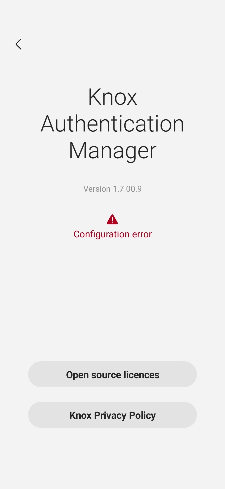

Get started as an IT admin
Last updated April 9th, 2025
If you’re an IT admin setting up Knox Authentication Manager for the first time, this tutorial walks you through the basic steps required for deploying the app to your enterprise devices.
Step 1: Get a Knox Suite license
You must have a valid Knox Suite license if you want to deploy Knox Authentication Manager to your enterprise devices. To get a Knox Suite license, you must first sign up for a Samsung Knox account. See the Knox Suite documentation for instructions on how to sign up and obtain a license.
Step 2: Grant access to Knox services
In addition to creating a Samsung account and getting a Knox Suite license, you must also grant your enterprise devices access to the Knox servers in order to verify their licenses and exchange data. To do this, you’ll need to configure several firewall exceptions in your organization. See Samsung Knox firewall exceptions for more details.
Step 3: Set up Knox Service Plugin
To ensure that Knox Authentication Manager performs optimally, you’ll need to configure specific Knox Service Plugin policies with your UEM or EMM. See Knox Service Plugin’s minimum requirements and UEM set up instructions.
Recommended Knox Service Plugin policies
In addition to the app policies, you should also push the following Knox Service Plugin policies to enure the app runs optimally:
- Add
com.samsung.android.knox.kam/com.samsung.android.knox.kam.ui.SplashScreenActivityto the Package Name for Auto-Launch policy to let the app automatically launch when you unlock the device. - Add
com.samsung.android.knox.kamto the Force Stop Blocklist policy in order to prevent users from force stopping the app. - Add
com.samsung.android.knox.kamto the Battery optimization allowlist policy to exempt the app from battery usage optimizations that could suspend its process.
Step 4: Set up your UEM or EMM
Depending on your UEM or EMM, you may need to configure your devices in a particular way in order to use Knox Authentication Manager.
Omnissa Workspace ONE1
Knox Authentication Manager can be configured to launch with or without the Omnissa Workspace ONE Launcher. For more information, see About Omnissa Workspace ONE Launcher in the UEM’s documentation.
Microsoft Intune
Knox Authentication Manager can be configured to launch with or without the Intune Managed Home Screen app. For more information, see Configure Managed Home Screen app in the Microsoft Intune documentation.
Knox Manage or SOTI MobiControl
If you’re using Knox Manage or SOTI MobiControl, you can configure your devices to launch Knox Authentication Manager in Kiosk mode (Knox Manage) or Lockdown mode (MobiControl). These modes let you constrain users to a limited set of apps and settings after they sign in, but they are not a firm requirement for the app.
Step 5: Add Knox Authentication Manager as a managed app in your UEM or EMM
Next, you’ll need to add Knox Authentication Manager as a managed Google Play app in your UEM or EMM. See the respective guides below for details on how to add apps:
For Knox Manage and SOTI MobiControl environments, you have to register Knox Authentication Manager in the Azure portal. To register Knox Authentication Manager in the Azure portal:
- Sign in to the Azure portal and navigate to Azure services > Microsoft Entra ID.
- Under Manage on the page that opens, select App registrations > New registration.
- Enter a name and click Register. You’ll be taken to the Overview page of your newly registered app.
- Under Manage click Authentication, then under Platform configurations, click Add a platform and select Android.
- In the side panel, enter the package name and signature hash for Knox Authentication Manager.
- Package name — com.samsung.android.knox.kam
- Signature hash — nKUXDzgZGd/gRG/NqxixmhQ7MWM=
- Click Configure, then click Done.
Knox Authentication Manager is now registered in your AAD tenant.
Step 6: Configure and assign the app
In your UEM or EMM, you’ll need to create a managed configuration for Knox Authentication Manager before deploying it to your enterprise devices. See Configure app policies for a list of available policies, descriptions, and options. Once you configure the Knox Authentication Manager policies, assign and install the app on your devices.
Microsoft Intune
Currently, you can only create a managed configuration for Microsoft Intune using a JSON file. To configure app policies, download and use the following JSON file.
Refer to the app policies page for an explanation of each key-value pair, then edit the file according to your fleet’s deployment needs. In the JSON file:
- Keys denoted with the value
CHANGEMEmust be edited for the configuration to work. - In case of a policy with a set number of choices, all the available options are listed. Otherwise, default values are used where possible.
If you wish to use Microsoft Intune without the Managed Home Screen app, set the value of the doKAMMainLoginApp policy to KAM_INTUNE.
Required Omnissa Workspace ONE activities
If you’re a Omnissa Workspace ONE customer, you must also add several activities in the Workspace ONE console. When configuring a device profile, enable the following Launcher settings and enter the package and class name pairs listed below. For more information on Launcher settings, see Configure Workspace ONE Launcher Profile in the Omnissa Workspace ONE documentation.
Check In Check Out (CICO) Features
Enable Add Allowlist Activities on Check-in Check-out Screen and enter the following package name and class name pairs:
| Package Name | Class Name |
|---|---|
| com.samsung.android.knox.kam | com.samsung.android.knox.kam.ui.SplashScreenActivity |
| com.samsung.android.knox.kam.ui.MainActivity | |
| com.samsung.android.knox.kam.context.EnrollPinActivity | |
| com.samsung.android.knox.kam.common.ActivityEventsInterceptor | |
| com.samsung.android.knox.kam.common.ActivityEventsInterceptorBackup | |
| com.samsung.android.knox.kam.auth.FacialEnrollmentStartActivity | |
| com.samsung.android.knox.kam.auth.FaceEnrollActivity | |
| com.samsung.android.knox.kam.auth.FaceRotationGuide | |
| com.samsung.android.knox.kam.auth.FaceRegisteredActivity | |
| com.samsung.android.knox.kam.dialogs.ActivityEventsInterceptor | |
| com.samsung.android.knox.kam.dialogs.ActivityEventsInterceptorBackup |
Advanced Customization
Enable Add Allowlist specific Android Activities and enter the following package name and class name pairs:
| Package Name | Class Name |
|---|---|
| com.samsung.android.knox.kam | com.samsung.android.knox.kam.common.ActivityEventsInterceptor |
| com.samsung.android.knox.kam.ui.SplashScreenActivity | |
| com.samsung.android.knox.kam.ui.OldPwHandleActivity |
Other recommended settings
For Omnissa Workspace ONE or Microsoft Intune admins:
- Exclude Knox Authentication Manager from clean up to avoid deleting inactive device records, if you use Workspace ONE or Intune.
- Allow Knox Authentication Manager main activity if you use Omnissa to allow the Knox Authentication Manager sign-in screen to pop up before the user signs in to the Omnissa launcher.
For SOTI MobiControl or Knox Manage admins:
- If users have Microsoft 365 accounts, ensure that they don’t set their Microsoft 365 accounts to remain signed in.
Troubleshoot configuration errors
When pushing a managed profile to your devices, you may run into a configuration error.

To identify the policy causing this error, you can view Knox Authentication Manager policies directly from the app’s About screen. For more information, see View policies on device.
-
Omnissa Workspace ONE is also known as VMware Workspace ONE. ↩︎
On this page
Is this page helpful?